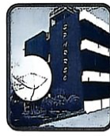

| বিষয় / শাখা | প্রশ্ন সংখ্যা | মূল আলোচিত বিষয়বস্তু |
|---|---|---|
| বাংলা ভাষা ও সাহিত্য | ২০টি | সুকান্ত ভট্টাচার্য, প্রমথ চৌধুরী, চর্যাপদের সান্ধ্যভাষা, রামমোহন রায়, তৎপুরুষ ও বহুব্রীহি সমাস, উপসর্গ ও সন্ধি |
| ইংরেজি ভাষা ও সাহিত্য | ২০টি | Evanescent, As if, It is high time, Had better, Cold shoulder, Indolent, Noun clause, Analogy |
| সাধারণ জ্ঞান (বাংলাদেশ ও আন্তর্জাতিক) | ২০টি | BIDA, SPARRSO, সমতট জনপদ, আল-জাজিরা, মুসলিম লীগ, সংবিধানের জরুরি অবস্থা (১৪১ক), বিটকয়েন, QUAD ও ব্রিকস |
| কারিগরি (সিভিল ইঞ্জিনিয়ারিং) | ৪০টি | সিঁড়ির ট্রেড-রাইজ, হাইড্রোলিক চাপ, আইসোমেট্রিক ভিউ, লেভেলিং স্টাফ, সার্ভেয়িং ও বিয়ারিং, সয়েল মেকানিক্স ও আরসিসি ডিজাইন |
| সর্বমোট প্রামাণ্য প্রশ্ন | ১০০টি | ১০০% নির্ভুল ও প্রামাণ্য বিশদ ব্যাখ্যাকেন্দ্রিক সমাধান |
'কী সুন্দর ফুল!' বাক্যে 'ফুল' বিশেষ্য পদ এবং 'সুন্দর' ফুলের গুণ প্রকাশ করায় বিশেষণ পদ। আর 'কী' শব্দটি 'সুন্দর' বিশেষণটির মাত্রা বা তীব্রতা প্রকাশ করায় এটি বিশেষণের বিশেষণ (বা ব্যাপক অর্থে বিশেষণ পদ হিসেবে গণ্য)।
কিশোর কবি সুকান্ত ভট্টাচার্যের মৃত্যুর তিন মাস পরে প্রকাশিত 'ছাড়পত্র' (১৯৪৭) কাব্যগ্রন্থের কালজয়ী কবিতা 'হে মহাজীবন'-এর বিখ্যাত পঙ্ক্তি: 'ক্ষুধার রাজ্যে পৃথিবী-গদ্যময় / পূর্ণিমার চাঁদ যেন ঝলসানো রুটি'। রফিক আজাদের বিখ্যাত কবিতা 'ভাত দে হারামজাদা'। জীবনানন্দ দাশের 'বনলতা সেন'। সুভাষ মুখোপাধ্যায়ের 'পদাতিক'।
যেসব স্ত্রীবাচক শব্দের কোনো পুরুষবাচক রূপ হয় না, তাদের নিত্য স্ত্রীবাচক শব্দ বলে। যেমন: সতীন, কুলটা, বিমাতা, পোয়াতি, সধবা, বিধবা, এয়ো, দাই ইত্যাদি। পক্ষান্তরে 'মা'-এর পুরুষবাচক 'বাবা', 'গীতিকা' ক্ষুদ্রার্থে স্ত্রীলিঙ্গ।
১৯১৪ সালে প্রমথ চৌধুরীর সম্পাদনায় প্রকাশিত 'সবুজপত্র' পত্রিকার মাধ্যমেই বাংলা সাহিত্যে চলিত গদ্যরীতির ('বীরবলী রীতি') চূড়ান্ত বিজয় সূচিত হয়। রবীন্দ্রনাথ ঠাকুর এই পত্রিকার অন্যতম প্রধান লেখক ও পৃষ্ঠপোষক ছিলেন।
বাংলা ভাষায় আগত তুর্কি শব্দসমূহ: উজবুক, বাবা, আলখাল্লা, উর্দু, কাঁচি, কুলি, কুর্নিশ, কোরমা, চকমক, তোপ, বন্দুক, বাবুর্চি, বাহাদুর, বেগম, মুচলেকা, লাশ, সওগাত ইত্যাদি।
ঘটক + আলি = ঘটকালি (বাংলা তদ্ধিত প্রত্যয় সাধিত শব্দ)। অন্যদিকে বচনামৃত সমাসবদ্ধ শব্দ (বচনের অমৃত), জন্মান্তর সমাসবদ্ধ শব্দ (অন্য জন্ম = নিত্য সমাস), কদাকার উপসর্গযুক্ত শব্দ (কদ্ + আকার)।
১৯৪৩ সালের (১৩৫০ বঙ্গাব্দ) পঞ্চাশের মন্বন্তরের পটভূমিতে রচিত কালজয়ী বাস্তববাদী নাটক 'নবান্ন' (১৯৪৪)-এর রচয়িতা বিজন ভট্টাচার্য। তাঁর অন্যান্য নাটক: জবানবন্দী, কলঙ্ক, মরাচাঁদ, গোত্রান্তর ইত্যাদি।
যেসব অব্যয় শব্দ বিশেষ্য বা সর্বনাম পদের পরে বসে বিভক্তির মতো কাজ করে বা অন্য পদের সাথে সম্পর্ক স্থাপন করে, তাদের অনুসর্গ (বা কর্মপ্রবচনীয়) বলে। এখানে 'বিনা' অনুসর্গ হিসেবে ব্যবহৃত হয়েছে।
মধু দিয়ে মাখা = মধুমখা (৩য়া তৎপুরুষ সমাস, পূর্বপদে 'দিয়ে' বিভক্তি লোপ পেয়েছে)। তেপান্তর দ্বিগু সমাস, নদীমাতৃক বহুব্রীহি সমাস, ছলচাতুরি দ্বন্দ্ব সমাস।
দুঃ + আত্মা = দুরাত্মা (বিসর্গসন্ধি)। বিসর্গের পরে স্বরধ্বনি থাকলে বিসর্গ স্থানে 'র্' হয়।
যে শব্দ প্রত্যয় বা উপসর্গজাত ব্যুৎপত্তিগত অর্থ না বুঝিয়ে ভিন্ন কোনো বিশেষ অর্থ প্রকাশ করে তাকে রূঢ়ি শব্দ বলে। 'সন্দেশ' শব্দের ব্যুৎপত্তিগত অর্থ 'সংবাদ', কিন্তু রূঢ়ি অর্থ 'মিষ্টান্ন বিশেষ'।
শুদ্ধ বানান 'স্বায়ত্তশাসন'। অন্য শব্দগুলোর শুদ্ধ রূপ: মুমূর্ষু (হ্রস্ব-দীর্ঘ-হ্রস্ব), শিরশ্ছেদ, মুহূর্ত।
'ঊনপাঁজুরে' বাগধারার অর্থ অপদার্থ, দুর্বল বা হতভাগ্য। অন্যদিকে অকালকুষ্মাণ্ড = অপদার্থ, ভিজে বেড়াল = কপটচারী।
চর্যাপদের ভাষাকে হরপ্রসাদ শাস্ত্রী 'সান্ধ্যভাষা' বা আলো-আঁধারি ভাষা বলেছেন, যার কিছু অংশ বোঝা যায় এবং কিছু অংশ সাধনা-তত্ত্বের গুঢ় রহস্যময়।
যে সমাসে সমস্যমান পদগুলোর কোনোটির অর্থ প্রধানভাবে না বুঝিয়ে তৃতীয় কোনো ব্যক্তি বা বস্তুকে বোঝায় তাকে বহুব্রীহি সমাস বলে। যেমন: নীল বসন যার = নীলবসনা।
Quota শব্দের প্রমিত বাংলা পারিভাষিক শব্দ হলো 'যথাংশ' বা নির্ধারিত অংশ।
১৮২১ সালে রাজা রামমোহন রায়ের সম্পাদনায় বাংলা সাপ্তাহিক পত্রিকা 'সম্বাদ কৌমুদী' প্রকাশিত হয়। সমাচার দর্পণ (১৮১৮) জন ক্লার্ক মার্শম্যানের সম্পাদনায় এবং সংবাদ প্রভাকর (১৮৩১) ঈশ্বরচন্দ্র গুপ্তের সম্পাদনায় প্রকাশিত হয়।
'নদী' শব্দের সমার্থক শব্দ: কুলবতী, স্রোতস্বিনী, তটিনী, তরঙ্গিনী, সরিৎ, গাঙ। অন্যদিকে সমীরণ = বাতাস, পারাবার = সমুদ্র।
'দরিদ্রতা' বা 'দারিদ্র্য' দুটিই শুদ্ধ রূপ (তবে 'দারিদ্র্যতা' ভুল)। অন্যগুলোর শুদ্ধ রূপ: ইতোপূর্বে, কর্নেল, ঐকমত্য।
পশু বা জন্তুর বহুবচনে 'পাল' ও 'যূথ' ব্যবহৃত হয়। তাই হাতির বহুবচনে 'হস্তিযূথ' সঠিক রূপ।
Evanescent অর্থ ক্ষণস্থায়ী বা অচিরস্থায়ী (transient)। এর বিপরীত শব্দ হলো Permanent (চিরস্থায়ী বা দীর্ঘস্থায়ী)।
As if / As though-এর প্রথম অংশ Past Indefinite tense হলে পরবর্তী অংশ Past Perfect tense হয়। তাই 'had happened' সঠিক।
Homophone হলো যেসব শব্দের উচ্চারণ একই কিন্তু বানান ও অর্থ ভিন্ন। 'Won' (জয়লাভ করেছিল) এবং 'One' (এক) উভয়ের উচ্চারণ একই (/wʌn/)।
It is high time-এর পর Subject থাকলে পরবর্তী Verb-টি Past Indefinite (V2) হয়। সুতরাং 'made' সঠিক।
অনুপস্থিত থাকা অর্থে 'Absent from' ব্যবহৃত হয়। যেমন: He was absent from the meeting.
সঠিক প্রবাদ বাক্যটি হলো: 'Man proposes, but God disposes' (মানুষ এক চিন্তা করে, কিন্তু বিধাতা অন্য রূপ দেন)।
ভবিষ্যতে কোনো নির্দিষ্ট সময়ের মধ্যে কোনো কাজ সম্পন্ন হয়ে থাকবে বোঝাতে (By + future time) Future Perfect Tense (will have + V3) ব্যবহৃত হয়।
Mimicry (অনুকরণ বা নকল করার কাজ) শব্দটির শেষে -ry প্রত্যয় থাকায় এটি একটি Noun।
'Had better' একটি semi-modal verb, যার পর সর্বদাই verb-এর base form (bare infinitive) বসে।
Let's / Let us যুক্ত Imperative sentence-কে Indirect করার নিয়ম: Subject + proposed/suggested to + object + that + we/they should + verb-এর base form।
'Cold shoulder' প্রদর্শন করার অর্থ কাউকে অবহেলা করা বা উপেক্ষা করা (to deliberately ignore someone)।
Always-এর পরিবর্তে Never এবং বিপরীত শব্দ Truth-এর স্থানে Lie বসিয়ে অর্থ অপরিবর্তিত রাখা হয়: 'She never tells a lie'.
Indolent অর্থ অলস, নিষ্ক্রিয় বা পরিশ্রমবিমুখ। Lethargic অর্থ নিস্তেজ বা অলস। সুতরাং সঠিক সমার্থক শব্দ Lethargic।
'সত্ত্বেও' অর্থে despite ব্যবহৃত হয় (নোট: despite-এর পর কখনো 'of' বসে না; in spite of বসে)।
সঠিক বানান হলো 'Heterogeneous' (বিজাতীয়, ভিন্নধর্মী বা বহুধর্মী)।
রোগ বা অসুস্থতা থেকে সুস্থ হওয়া বা আরোগ্য লাভ করা অর্থে 'come round' ব্যবহৃত হয়।
অতীতে একটি কাজ চলাকালীন অন্য ঘটনা ঘটলে চলমান কাজের জন্য Past Continuous Tense ('was shining') ব্যবহৃত হয়।
'That he is very intelligent' অংশটি বাক্যের মূল Verb 'is'-এর Subject হিসেবে কাজ করায় এটি একটি Noun Clause।
ঘোড়া, ট্রেন, বাস ইত্যাদি থেকে নামার ক্ষেত্রে সঠিক ইংরেজি এক্সপ্রেশন হলো 'get off' (Past: got off)। এর সাথে অতিরিক্ত 'from' যোগ করা বাহুল্য দোষ।
Pleasure-এর তীব্র বা চরম রূপ হলো Ecstasy (পরমানন্দ)। তেমনি Anger (রাগ)-এর চরম বা তীব্র রূপ হলো Rage (প্রচণ্ড ক্ষোভ বা ক্রোধ)। এটি ডিগ্রি অব ইনটেনসিটির অ্যানালজি।
BIDA হলো বাংলাদেশ বিনিয়োগ উন্নয়ন কর্তৃপক্ষ (Bangladesh Investment Development Authority)। এটি ২০১৬ সালে বিনিয়োগ বোর্ড ও প্রাইভেটাইজেশন কমিশন একীভূত করে গঠিত হয়। এটি প্রধানমন্ত্রীর কার্যালয়ের অধীনস্থ।
১৯৭১ সালের ১৫ নভেম্বর ইন্টেল করপোরেশন বিশ্বের প্রথম বাণিজ্যিক মাইক্রোপ্রসেসর 'Intel 4004' বাজারে ছাড়ে। এটি ছিল একটি ৪-বিট মাইক্রোপ্রসেসর।
ইরানের পার্লামেন্টের নাম 'মজলিস' (মজলিস-ই শুরা-ই ইসলামি)। আসন সংখ্যা ২৯০টি। ইসরায়েলের পার্লামেন্ট নেসেট, যুক্তরাষ্ট্রের কংগ্রেস।
বাংলাদেশ সরকারের আয়ের প্রধানতম উৎস কর রাজস্ব (ট্যাক্স রেভিনিউ), যার মধ্যে মূল্য সংযোজন কর (মূসক বা ভ্যাট) থেকে সর্বাধিক আয় সংগৃহীত হয়।

বাংলাদেশের প্রধান ও সর্বাপেক্ষা মূল্যবান বাণিজ্যিক খনিজ সম্পদ হলো প্রাকৃতিক গ্যাস। ১৯৫৫ সালে সিলেটের হরিপুরে দেশের প্রথম গ্যাসক্ষেত্র আবিষ্কৃত হয় এবং ১৯৫৭ সালে উত্তোলন শুরু হয়।
প্রাচীন বাংলার পূর্ব ও দক্ষিণ-পূর্বাঞ্চলীয় জনপদ 'সমতট' প্রধানত মেঘনা নদীর পূর্ববর্তী বৃহত্তর কুমিল্লা ও নোয়াখালী অঞ্চল নিয়ে গঠিত ছিল। সমতটের রাজধানী ছিল বড়কামতা।
আল-জাজিরা (Al Jazeera) মধ্যপ্রাচ্যের অন্যতম প্রভাবশালী স্যাটেলাইট সংবাদ নেটওয়ার্ক। এর সদর দপ্তর কাতারের রাজধানী দোহায় অবস্থিত।
১৯০৬ সালের ৩০ ডিসেম্বর ঢাকার আহসান মঞ্জিলে অনুষ্ঠিত সর্বভারতীয় মুসলিম শিক্ষা সম্মেলনে নবাব সলিমুল্লাহর উদ্যোগে 'নিখিল ভারত মুসলিম লীগ' প্রতিষ্ঠিত হয়।
হাইফা হলো ভূমধ্যসাগরের উপকূলে অবস্থিত ইসরায়েলের বৃহত্তম ও প্রধান আন্তর্জাতিক সমুদ্র বন্দর। ভারতের আদানি গ্রুপ বর্তমানে এই বন্দর পরিচালনা করছে।
বানানা রিপাবলিক একটি রাজনৈতিক ব্যঙ্গাত্মক পরিভাষা, যা মধ্য আমেরিকার এমন সব ক্ষুদ্র দেশকে বোঝায় যারা রাজনৈতিকভাবে চরম অস্থিতিশীল, দুর্নীতিগ্রস্ত এবং অর্থনীতি একটি একক প্রাথমিক রপ্তানি পণ্যের (যেমন: কলা) ওপর বিদেশি পুঁজিপতিদের নিয়ন্ত্রণে পরিচালিত হয় (যেমন: হন্ডুরাস)।
বাংলাদেশের পল্লী এলাকার স্থানীয় সরকারের ত্রি-স্তর কাঠামোর সর্বনিম্ন ও মূল ভিত্তি হলো 'ইউনিয়ন পরিষদ'। সর্বোচ্চ স্তর জেলা পরিষদ এবং মধ্যম স্তর উপজেলা পরিষদ।
২৫ জানুয়ারি ১৯৭৫ সালে জাতীয় সংসদে সংবিধানের ৪র্থ সংশোধনী পাস হয়। এর মাধ্যমে সংসদীয় পদ্ধতি বাতিল করে রাষ্ট্রপতি শাসিত সরকার ও একদলীয় শাসন ব্যবস্থা (বাকশাল) কায়েম করা হয়।
২০০৯ সালে সাতোশি নাকামোতো ছদ্মনামে এক বা একাধিক অজ্ঞাত প্রোগ্রামার ব্লকচেইন প্রযুক্তির ওপর ভিত্তি করে বিশ্বের প্রথম ডিজিটাল মুদ্রা 'বিটকয়েন' (Bitcoin) চালু করেন।
UNFPA (United Nations Population Fund) জাতিসংঘ সাধারণ পরিষদের একটি সংস্থা, যা বিশ্বব্যাপী জনসংখ্যা তথ্য, প্রজনন স্বাস্থ্য এবং মাতৃমৃত্যু রোধে কাজ করে। সদর দপ্তর নিউ ইয়র্ক।
সংবিধানের ৯ম-ক ভাগে অনুচ্ছেদ ১৪১ক অনুযায়ী যুদ্ধ, বহিরাক্রমণ বা অভ্যন্তরীণ গোলযোগের কারণে রাষ্ট্রের নিরাপত্তা বা অর্থনৈতিক জীবন বিঘ্নিত হলে মহামান্য রাষ্ট্রপতি জরুরি অবস্থা ঘোষণা করতে পারেন।
হাজংরা সমতলের আদিবাসী সম্প্রদায়, যারা প্রধানত নেত্রকোণা, শেরপুর, ময়মনসিংহ ও সুনামগঞ্জ জেলায় বসবাস করে। চাকমা, মারমা ও ত্রিপুরা প্রধানত পার্বত্য চট্টগ্রামে বসবাস করে।
কোয়াড (Quadrilateral Security Dialogue) হলো ইন্দো-প্যাসিফিক অঞ্চলে ৪টি গণতান্ত্রিক রাষ্ট্রের কৌশলগত জোট: যুক্তরাষ্ট্র, জাপান, ভারত ও অস্ট্রেলিয়া। মালয়েশিয়া এই জোটের সদস্য নয়।
বেল্ট অ্যান্ড রোড ইনিশিয়েটিভ (BRI) বা ওয়ান বেল্ট ওয়ান রোড চীনের প্রেসিডেন্ট শি জিনপিং কর্তৃক ২০১৩ সালে ঘোষিত প্রাচীন সিল্ক রোডের আধুনিক পুনর্জাগরণভিত্তিক এশিয়া, ইউরোপ ও আফ্রিকাকে সংযুক্ত করার বৈশ্বিক অবকাঠামো প্রকল্প।
ব্রিকসের মূল ৫ সদস্য: ব্রাজিল, রাশিয়া, ভারত, চীন ও দক্ষিণ আফ্রিকা। ২০২৪ সালে মিশর, ইথিওপিয়া, ইরান ও সংযুক্ত আরব আমিরাত যুক্ত হয়েছে। শ্রীলংকা ব্রিকসের সদস্য নয়।
মোট উচ্চতা \(= 1.5\text{ m} = 150\text{ cm}\)।
রাইজারের সংখ্যা \(= \frac{150}{15} = 10\)টি।
আমরা জানি, ট্রেডের সংখ্যা \(= \text{রাইজারের সংখ্যা} - 1 = 10 - 1 = 9\)টি।
পানির তীব্রতা \(P = \omega h\)। যেখানে পানির একক ওজন \(\omega = 1000\text{ kg/m}^3\) এবং উচ্চতা \(h = 10\text{ m}\)।
অতএব চাপ \(P = 1000 \times 10 = 10,000\text{ kg/m}^2\)।
আইসোমেট্রিক প্রজেকশনে দুটি অনুভূমিক অক্ষ অনুভূমিক তলের সাথে 30° কোণে এবং উলম্ব অক্ষটি 90° কোণে অবস্থান করে (অক্ষত্রয়ের মধ্যবর্তী কোণ 120°)।
স্ল্যাবের ন্যূনতম পুরুত্ব নির্ণয়ের সূত্র: \(t = \frac{\text{Perimeter}}{180} = \frac{2(350 + 450)}{180} = \frac{1600}{180} = 8.88\text{ cm}\)।
লেভেলিংয়ের নিয়মানুযায়ী স্টাফের পাঠ যে বিন্দুতে বেশি হয়, সেই বিন্দুর ভূমি তত নিচু হয়। B বিন্দুতে পাঠ 1.6 m (A-এর 1.4 m-এর চেয়ে বেশি), সুতরাং B বিন্দুটি নিচু।
প্রকৃত বিয়ারিং \(= \text{চৌম্বক বিয়ারিং} \pm \text{অনৈক্য}\)। ডিক্লিনেশন পূর্ব (East) দিকে থাকলে যোগ করতে হয় এবং পশ্চিম (West) দিকে থাকলে বিয়োগ করতে হয়।
প্লেন টেবিল জরিপে লক্ষ্যবস্তু পর্যবেক্ষণ ও টেবিলে রেখা অঙ্কন করার জন্য প্রধান দৃষ্টিযন্ত্র হিসেবে অলিডেড ব্যবহৃত হয়।
কণার আকার বিভাজন: নুড়ি/গ্রাভেল > 4.75 mm, বালি = 0.075 mm থেকে 4.75 mm, পলি (Silt) = 0.002 mm থেকে 0.075 mm এবং কাদা (Clay) < 0.002 mm।
প্রবাহের অবিচ্ছিন্নতা সূত্রানুযায়ী \(Q = A \times V\)। ব্যাস বাড়লে প্রস্থচ্ছেদ ক্ষেত্রফল \(A\) বাড়ে, ফলে নির্দিষ্ট প্রবাহ \(Q\) বজায় রাখতে বেগ \(V = \frac{Q}{A}\) হ্রাস পায়।
বিমে টেনশন জোনে সর্বোচ্চ বেন্ডিং মোমেন্ট থাকে, তাই সেখানে ল্যাপিং দেওয়া নিষেধ। কম্প্রেশন জোনে বা কম চাপের স্থানে ল্যাপিং দেওয়া নিরাপদ।
একটি সাধারণভাবে স্থাপিত (Simply supported) বিমে সমভাবে বিস্তৃত লোডের (UDL) ক্ষেত্রে বিমের কেন্দ্রে সর্বোচ্চ বেন্ডিং মোমেন্ট \(M_{\max} = \frac{wL^2}{8}\)।
Degree of Saturation \(S = \frac{V_w}{V_v}\)। সম্পূর্ণ শুকনো মাটিতে পানির আয়তন \(V_w = 0\), তাই \(S = 0\)। সম্পূর্ণ সম্পৃক্ত মাটিতে \(S = 1\) (বা 100%)।
0° থেকে 90°-এর মধ্যে WCB ১ম চতুর্ভাগে (NE) থাকে এবং মান অপরিবর্তিত থাকে। অতএব \(\text{RB} = \text{N } 30^\circ \text{ E}\)।
টাইড কলামে প্রধান রড সর্বনিম্ন ৪টি এবং স্পাইরাল কলামে প্রধান রড সর্বনিম্ন ৬টি দিতে হয়। সুতরাং পার্থক্য \(= 6 - 4 = 2\)টি।
AutoCAD-এর মডেল স্পেসে প্রতিটি উপাদান পূর্ণ বা প্রকৃত মাপে (Full scale বা 1:1) আঁকা হয়। প্রিন্টিং বা লেআউটের সময় নির্দিষ্ট স্কেল নির্ধারণ করা হয়।
যেহেতু \(3^2 + 4^2 = 9 + 16 = 25 = 5^2\), এটি একটি পিথাগোরিয়ান সমকোণী ত্রিভুজ।
ক্ষেত্রফল \(= \frac{1}{2} \times \text{ভূমি} \times \text{উচ্চতা} = \frac{1}{2} \times 3 \times 4 = 6\text{ km}^2\)।
ক্যাসাগ্রান্ডে যন্ত্রে যে জলীয় অংশে মাটির খাঁজ ২৫টি আঘাতে 0.5 ইঞ্চি (বা 12 mm) পরস্পর মিলিত হয়, তাকে মাটির তারল্য সীমা (Liquid Limit) বলে।
ক্যান্টিলিভার স্ল্যাবের ক্ষেত্রে পুরুত্ব \(t = \frac{L}{20} = \frac{180}{20} = 9\text{ cm}\)।
মাটির শুষ্ক একক ওজনের মূল সূত্র হলো \(\gamma_d = \frac{\gamma}{1 + \omega}\), যেখানে \(\omega\) হলো পানির শতকরা পরিমাণ বা জলীয় ভগ্নাংশ।
1:2:4 অনুপাতে ১ ভাগ সিমেন্ট, ২ ভাগ বালি (ফাইন এগ্রিগেট) এবং ৪ ভাগ খোয়া বা পাথর কুচি (কোর্স এগ্রিগেট) বোঝায়।
ক্যান্টিলিভার বিমে মুক্ত প্রান্ত থেকে দূরত্ব বাড়ার সাথে সাথে মোমেন্ট বাড়ে এবং ফিক্সড সাপোর্টে মোমেন্ট সর্বোচ্চ হয় (মুক্ত প্রান্তে মোমেন্ট শূন্য)।
মশলাসহ ১টি ইটের আয়তন \(= 0.20 \times 0.10 \times 0.10 = 0.002\text{ m}^3\)। অতএব ১ ঘনমিটারে ইটের সংখ্যা \(= \frac{1}{0.002} = 500\)টি।
ACI কোড অনুযায়ী স্ল্যাবে সংকোচন ও প্রসারণ রোধে প্রধান রডের কেন্দ্র থেকে কেন্দ্র ব্যবধান স্ল্যাবের পুরুত্বের ৩ গুণের (বা 18 ইঞ্চি/45 cm) বেশি হবে না।
SPT N-ভ্যালু মাটির দৃঢ়তা ও ঘনত্বের নির্দেশক। N-এর মান যত বেশি হয়, মাটির শিয়ার শক্তি এবং নিরাপদ ভারবহন ক্ষমতা (Bearing Capacity) তত বেশি হয়।
কলাম থেকে ফুটিংয়ে আসা মোট লোডের অতিরিক্ত প্রায় 10% ফুটিং ও তার ওপরের মাটির নিজস্ব ওজন (Self-weight) হিসেবে ধরে মোট লোড হিসাব করা হয়।
ACI কোড অনুযায়ী ওয়ান-ওয়ে স্ল্যাবের প্রথম অভ্যন্তরীণ সাপোর্টের অবিচ্ছিন্ন প্রান্তের মুখে শিয়ার বল \(= 0.6 W\) (বা \(1.15 \times \frac{wL}{2} \approx 0.6wL\))।
\(\text{Allowable Bearing Capacity} = \frac{\text{Ultimate Bearing Capacity}}{\text{Factor of Safety}}\)।
অতএব \(\text{Ultimate} = \text{Allowable} \times \text{FS} = 3 \times 3 = 9\text{ ton/m}^2\)।
কন্টিনিউয়াস স্পাইরাল হুপ কংক্রিটকে ল্যাটেরাল টাইয়ের চেয়ে চমৎকারভাবে আবদ্ধ রাখে বলে স্পাইরাল কলাম টাইড কলামের চেয়ে প্রায় 15% বেশি লোড বহন করতে সক্ষম।
ক্যান্টিলিভার বিমে মোমেন্ট \(M = \frac{wL^2}{2}\), যা সাধারণভাবে স্থাপিত বিমের মোমেন্ট \(\frac{wL^2}{8}\) অপেক্ষা ৪ গুণ বেশি।
Grade 40 বা 60 ডিফর্মড বারের ক্ষেত্রে স্ল্যাবে সংকোচন ও তাপমাত্রাজনিত রডের ন্যূনতম অনুপাত হলো মোট ক্ষেত্রফলের 0.0018 থেকে 0.002 গুণ (অর্থাৎ \(A_s = 0.002 bt\))।
পোরোসিটি \(n = \frac{V_v}{V}\) (মাটির ফাঁকা স্থানের মোট আয়তন ও মোট মৃত্তিকা আয়তনের অনুপাত)। আর ভয়েড রেশিও \(e = \frac{V_v}{V_s}\)।
ছাদের সিলিং বা তলদেশে মসৃণ প্লাস্টারে ভালো বন্ধন নিশ্চিত করতে 1:4 (১ ভাগ সিমেন্ট ও ৪ ভাগ বালি) অনুপাত ব্যবহৃত হয়।
শিকল লাইনের ওপর ঠিক 90° সমকোণে অফসেট টানার জন্য অপটিক্যাল স্কয়ার বা ক্রস স্টাফ ব্যবহার করা হয়।
সাধারণভাবে স্থাপিত বিমের কেন্দ্রে কেন্দ্রীভূত লোড P-এর জন্য সর্বোচ্চ ডিফ্লেকশন \(\Delta_{\max} = \frac{PL^3}{48EI}\)।
এক প্রান্ত ফিক্সড ও অন্য প্রান্ত মুক্ত কলামের ক্ষেত্রে কার্যকরী দৈর্ঘ্য \(L_e = 2L\)।
প্রশ্নমতে, \(2L = 6\text{ m} \Rightarrow L = \frac{6}{2} = 3\text{ m}\)।
উলম্ব প্রতিক্রিয়া \(R_v = W \times \sin 45^\circ = 100\sqrt{2} \times \frac{1}{\sqrt{2}} = 100\) টন।
ফোর বিয়ারিং 180°-এর কম হলে ব্যাক বিয়ারিং \(= \text{FB} + 180^\circ = 45^\circ + 180^\circ = 225^\circ\)।
পানির ওজন \(W_w = 20 - 15 = 5\text{ kg}\)।
মাটির জলীয় অংশ \(\omega = \frac{W_w}{W_s} \times 100\% = \frac{5}{15} \times 100\% = \frac{1}{3} \times 100\% = 33.33\%\)।
মাটি সুষম বা Well graded হওয়ার শর্ত: বালির জন্য \(C_u > 6\) এবং নুড়ির জন্য \(C_u > 4\); এবং উভয়ের জন্যই \(1 \le C_c \le 3\) হতে হয়।
আলটিমেট স্ট্রেন্থ ডিজাইন (USD) পদ্ধতিতে ডিজাইন লোডের সূত্র: \(U = 1.4 DL + 1.7 LL\)। সুতরাং ডেড লোডকে 1.4 দ্বারা গুণ করা হয়।